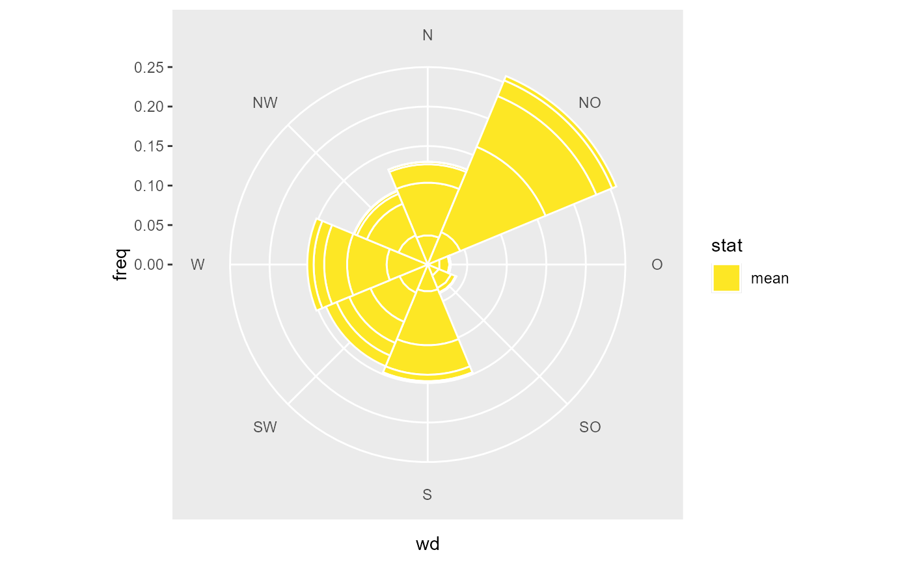
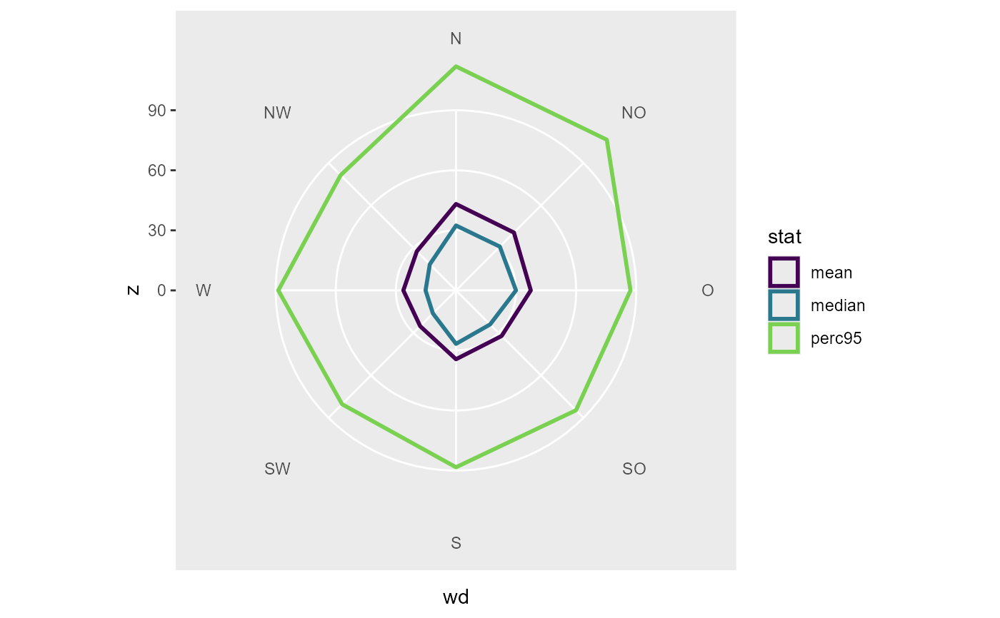
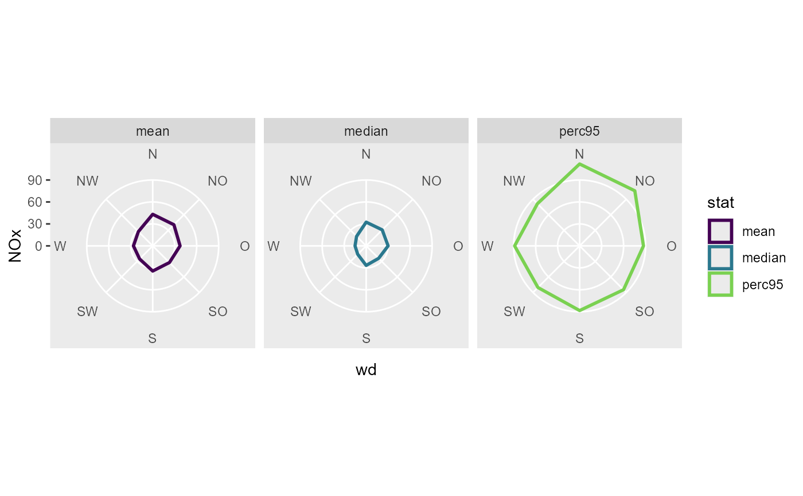

Summarise z values over binned wind data.
Source:R/geom_bar_wind.R, R/stat_summary_wind.R
geom_bar_wind.RdAll calculation are done by summary_wind(), see the documentation for the details.
stat_summary_wind() uses the aesthetics ws, wd and z to map the correspondent arguments
for summary_wind(). The computed variables are named ws, wd and z. geom_bar_wind()
is an extension to ggplot2::geom_bar() with stat_summary_wind() as default stat and correct
handling of the factorized x aesthetic. To map the computed Variables use ggplot2::stat().
geom_bar_wind(mapping = NULL, data = NULL, stat = "summary_wind", position = "stack", ..., fun = "mean", fun.args = list(), nmin = 3, wd_cutfun = cut_wd.fun(binwidth = 45), ws_cutfun = cut_ws.fun(binwidth = 1), na.rm = FALSE, show.legend = NA, inherit.aes = TRUE) stat_summary_wind(data = NULL, mapping = NULL, geom = "bar_wind", position = "stack", ..., groupings = grp(), fun = "mean", fun.args = list(), nmin = 3, wd_cutfun = cut_wd.fun(binwidth = 45), ws_cutfun = cut_ws.fun(binwidth = 1), na.rm = FALSE, show.legend = NA, inherit.aes = TRUE)
Arguments
| mapping | Set of aesthetic mappings created by |
|---|---|
| data | a data.frame or tibble containing the data (wide format) |
| stat | The statistical transformation to use on the data for this layer, as a string. |
| position | Position adjustment, either as a string, or the result of a call to a position adjustment function. |
| ... | Other arguments passed on to |
| fun | function or list of functions for summary. |
| fun.args | a list of extra arguments passed on to fun. |
| nmin | numeric, minimum number of values for fun, if n < nmin: NA is returned |
| wd_cutfun | function, cut function for wind direction (to create bins). See |
| ws_cutfun | function, cut function for wind speed. See |
| na.rm | If |
| show.legend | logical. Should this layer be included in the legends?
|
| inherit.aes | If |
| geom | The geometric object to use display the data |
| groupings | additional groupings. Use helper |
Value
Recommendation
The facetting functions takes the inputs and evaluate them in the context of the dataset.
This means it is impossible to use a computed variable from a stat or from an asthetic.
This limitation means summary_wind() isn't a good fit with ggplot as a stat.
In most cases it is simpler to summarize the data beforehand and then create a plot from the summarized data.
ggwindrose() and ggradar() can be used to create some standardized plots.
Examples
library(ggplot2) fn <- rOstluft.data::f("Zch_Stampfenbachstrasse_2010-2014.csv") data <- rOstluft::read_airmo_csv(fn) data <- rOstluft::rolf_to_openair(data) # a simple wind rose ggplot(data, aes(x = stat(wd), y = stat(freq), fill = stat(ws))) + geom_bar_wind( mapping = aes(wd = wd, ws = ws, z = ws), ws_cutfun = cut_ws.fun(ws_max = 4), width = 1, color = "white" ) + coord_polar2(start = - 22.5 / 180 * pi ) + scale_fill_viridis_d(direction = -1)#> Warning: Removed 27 rows containing non-finite values (stat_summary_wind).# # use stat_summary_wind to generate a radar plot using # the polygon geom, position "identity" and coord_radar() f <- list( "median", "mean", "perc95" = ~ stats::quantile(., probs = 0.95) ) ggplot(data, aes(x = stat(wd), y = stat(z), color = stat(stat), group = stat(stat))) + stat_summary_wind( mapping = aes(wd = wd, ws = ws, z = NOx), geom = "polygon", position = "identity", fun = f, ws_cutfun = function(x) factor("ws"), fill = NA, size = 1 ) + coord_radar(start = - 22.5 / 180 * pi) + scale_y_continuous(limits = c(0, NA), expand = c(0,0)) + scale_color_viridis_d(end = 0.8)#> Warning: Removed 767 rows containing non-finite values (stat_summary_wind).# ggplot2 doesn't support faceting over a Variable computed in a stat. # But we can summarise the data first and then create the plot. # Less ggplot2 magic, but more transparent for the user data_summarized <- summary_wind(data, ws, wd, NOx, fun = f, ws_cutfun = function(x) factor("ws") ) ggplot(data_summarized, aes(x = wd, y = NOx, color = stat, group = stat)) + geom_polygon(size = 1, fill = NA) + coord_radar(start = - 22.5 / 180 * pi ) + scale_color_viridis_d(end = 0.8) + scale_y_continuous(limits = c(0, NA), expand = c(0,0)) + facet_wrap(vars(stat))# like faceting the mapping mechanism makes it hard to impossible # to use the grouping argument of summary wind. Do the summarise # external. # For example: how often comes which concentration from a sector data_summarized <- summary_wind(data, ws, wd, NOx, groupings = grp( fNOx = ggplot2::cut_number(NO2, 5), year = lubridate::year(date) ), ws_cutfun = cut_number.fun(1) ) ggplot(data_summarized, aes(x = wd, y = freq, fill = forcats::fct_rev(fNOx))) + geom_bar(stat = "identity") + coord_polar2(start = - 22.5 / 180 * pi ) + scale_fill_viridis_d(direction = -1, name = "NOx")